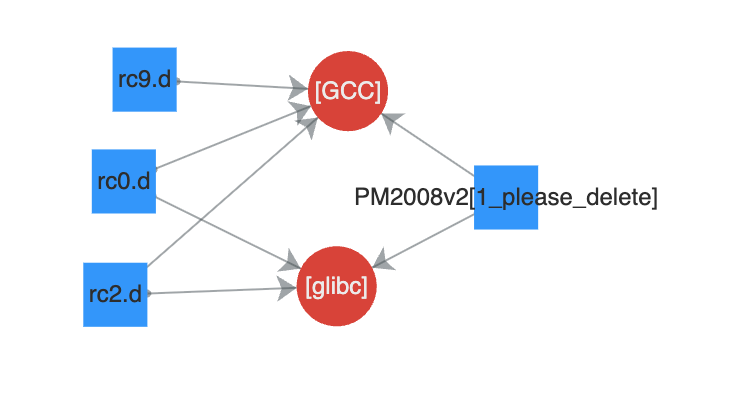

上一篇文章写到游戏有个破坏分区的保护机制，本篇将深入分析。
作为2007年发布的游戏，此游戏加固机制还是比较落后的，主要是靠一些拼接，修改特征的方法来加固。并没有现代APP加固的那么卷的特性。主要是加固的环节有点多，并且每个游戏都不一样。然后由于开发上的特性，（编译优化，代码风格），使得逆向分析变麻烦了。
要提取游戏其实比较简单，等游戏运行时通过shell从内存或者从文件系统（如果文件落地）dump就行了。但是如果要提取不同游戏，这样就太麻烦了，还是先静态分析吧。
总之，这个逆向过程像是在做MISC题一样，需要一些逻辑推理。
逆向陷阱
一般情况下，分析文件系统的内容，很少会先从内核入手，一般先看init相关文件。 第一步一般都是看 /etc/inittab，脚本首先启动rc，然后启动图形界面
# Begin /etc/inittab
id:4:initdefault:
si::sysinit:/etc/rc.d/init.d/rc
x:4:respawn:/etc/X11/IGS &> /dev/null
# End /etc/inittab
/etc/rc.d/init.d/rc
#!/bin/bash
PATH=/bin:/sbin:/usr/bin:/usr/sbin
export PATH
mount -n -o remount,rw /
mount -n -t ramfs tmp /tmp
mount -n -t proc proc /proc
mount -n -t usbdevfs usbdevfs /proc/bus/usb
#echo "copy for etc"
cp -a /etc/* /tmp
mount -n -t ramfs etc /etc
cp -a /tmp/* /etc
rm -rf /tmp/*
#echo "copy for dev"
cp -a /dev/* /tmp
mount -n -t ramfs dev /dev
cp -a /tmp/* /dev
rm -rf /tmp/*
mount -n -t devpts pts /dev/pts
mount -n -t tmpfs shm /dev/shm
#echo "copy for var"
cp -a /var/* /tmp
mount -n -t ramfs var /var
cp -a /tmp/* /var
rm -rf /tmp/*
#echo "copy for root"
cp -a /root/.b* /tmp
mount -n -t ramfs root /root
cp -a /tmp/.b* /root
rm -rf /tmp/.b*
/sbin/hdparm -c1 -d1 -k1 -Xudma4 /dev/hdc &> /dev/null
/etc/X11/IGS
配置环境变量，启动X，然后启动读卡器，最后启动游戏，除了这个循环有一点反常，其他都非常正常。到这个时候肯定就认为/PM2008v2/PM2008v2是游戏本体了
#!/bin/sh
TZ="UCT"
TERM="xterm"
TempFile="/tmp/XTemp"
HZ="100"
PATH=/sbin:/usr/sbin:/bin:/usr/bin:/usr/X11R6/bin
LD_LIBRARY_PATH=/usr/X11R6/lib:/usr/X11R6/lib/modules/extensions
DISPLAY=:0
export PATH LD_LIBRARY_PATH DISPLAY TERM HZ TZ
ps -A | grep XFree86 | ( while read pid tty time command; do kill -9 $pid; done )
XFree86 &> /dev/null&
mwm &> /dev/null &
/usr/X11R6/bin/xsetroot -cursor /usr/X11R6/bitmaps/empty_ptr /usr/X11R6/bitmaps/empty_ptr
if [ -f $TempFile ];then
rm -rf $TempFile
sleep 10
exit 0
else
touch $TempFile
fi
/etc/rc.d/init.d/cardreader &> /dev/null&
export TZ="CST"
#Run Game
cd /PM2008v2
while [ 1 ]
do
./PM2008v2 &> /dev/null
sleep 5
done
接下来分析 PM2008v2，第一眼看上去，里面有很多程序装载的代码。联想到之前有很多文件没有magic，猜测可能是拿来动态加载代码文件还原成elf的。但是后来 Nova 和我说这东西不是游戏，我才知道了它的异常。这个文件有很多glibc特征，感觉就是一个静态链接glibc的程序。
为了方便逆向和后期的游戏移植，我需要确认GCC和GLibc版本，PM2008v2: GCC: (GNU) 3.3.1，但是没有GLibc的版本信息。 因此我直接找到系统的libc.so，版本暂定为glibc 2.3.2。在最新的linux下不好编译，docker下也出了问题。
分析伪游戏程序
编译 GCC 3.3.1
由于目标版本内核是i686的，我使用CentOS4编译，运行在VMware，为了保证优化之后的汇编代码一致，我要使用相同GCC的版本，然后编译。并且搭建这个环境，也能方便以后对辅助分析该平台其他游戏，也有一些帮助。前期准备工作多一点，后期就可以少走一些弯路。
wget http://mirrors.aliyun.com/gnu/gcc/gcc-3.3.1/gcc-3.3.1.tar.gz
使用阿里云的vault源，先安装开发环境依赖。
yum groupinstall "Development Tools"
使用下列配置，指定版本为i686，旧版的gcc，最好不要并发编译，可能会出问题（3.3.1没有遇到，3.2.2遇到了），然后删除系统自带的gcc，再安装。
../gcc-3.3.1/configure --prefix=/opt/gcc_3.3.1 --infodir=/usr/share/info --enable-shared --enable-threads=posix --disable-checking --with-system-zlib --enable-__cxa_atexit --disable-libunwind-exceptions --host=i686-pc-gnu-linux --build=i686-pc-linux-gnu --target=i686-pc-linux-gnu
make -j8
yum remove gcc
make install
编译 Glibc 2.3.2
wget http://mirrors.aliyun.com/gnu/glibc/glibc-2.3.2.tar.gz
wget http://mirrors.aliyun.com/gnu/glibc/glibc-linuxthreads-2.3.2.tar.gz
linuxthreads要解压到glibc目录
tar -zxvf glibc-2.3.2.tar.gz
cd glibc-2.3.2
tar -zxvf ../glibc-linuxthreads-2.3.2.tar.gz
GCC 2.3.2编译可能会遇到一些bug，需要打patch，刚好E2000平台的Linux也是LFS版本，可以去这里下载 LFS Glibc patches
patch -p1 < ../patches/glibc-2.3.2-sscanf-1.patch
patch -p1 < ../patches/glibc-2.3.2-inlining_fixes-2.patch
patch -p1 < ../patches/glibc-2.3.2-test_lfs-1.patch
接下来配置编译选项，先暂时这么用吧，因为即使设置细分的优化选项，最后的汇编内容都和目标文件差异很大。
CC=/opt/gcc_3.3.1/bin/gcc CFLAGS="-march=pentium4 -O2" ../glibc-2.3.2/configure --prefix=/lib --disable-profile --enable-add-ons --libexecdir=/usr/lib --with-headers=/usr/include
差异项：
- 栈帧：目标程序大部分的函数返回都是
0xC9 leave，而我编译的都是先move esp, ebp，然后pop ebp。 - 内链函数：目标程序函数内部的call，一些中等长度的函数，会被优化成内联函数。
上述内容，即使我将编译优化级别设为O3，也几乎没有变化。手动配置fomit-frame-pointer、-finline-limit=n等信息，也没用。也许需要手动设置__inline__吧，我没时间去验证。 这个情况，用flare生成signature，几乎还原不了那种函数内部带有call的符号。
经过分析，PM2008v2这个程序，就是一个killdisk函数，静态编译了glibc。

因此，如果执行inittab，是不可能启动游戏的。
系统初始化分析
网友的逆向成果
Nova之前告诉了我一些信息，实际上，仅从这个笔记，我看不出具体的加载流程，只能看出文件头需要还原，然后rc.0实际上是elf文件，启动时会执行。而且Submarine Crisis游戏文件和我的PM2008游戏文件又一些差异。
https://github.com/batteryshark/igstools/blob/main/scripts/igs_rofsv1_dumpexec.py
这个脚本是用于还原游戏文件的，我尝试了一下，可以生成一个ELF，但是放到IDA分析会出错。我并不知道生成的文件要如何运行。因此还是需要自己分析一遍。
分析内核启动过程
通过分析依赖和其他环境变量，并没有找到任何能启动游戏的路径。在上一篇文章，分析了文件系统挂载，在挂载之后，还有一系列操作。IDA遇到长度过大的函数，可能就会出错，无法反编译。但是问题不大，麻烦的不在这里。

上一篇文章由于是分析基于开源代码魔改的filesystem，可以直接对照逆向，因此不还原其他符号，问题也不大。该内核版本是2.4，bzImage没有携带符号表。这里的代码很多是IGS自己开发的，有些系统调用不是通过int来调用的。如果有用到syscall，在符号没还原的情况下分析，还是有一些麻烦，如果用bindiff，就需要在ida 8下用。我没有时间去移植到Mac上。Linux Kernel有一个syscall table，如果IGS没有自定义过syscall，那么可以直接将自己编译的kernel的syscall 符号照搬过来。
另外，IDA9对这个老的Linux 2.4内核解析不太好，很多交叉引用和汇编指令都没有识别出来，需要手动修复。
修复立即数交叉引用
import ida_ida
import ida_bytes
import ida_ua
import idautils
def find_immediate_values_and_convert_to_offset(start_range, end_range):
converted_count = 0
checked_count = 0
min_ea = ida_ida.inf_get_min_ea()
max_ea = ida_ida.inf_get_max_ea()
print(f"EA range: 0x{start_range:X} - 0x{end_range:X}")
print(f"Immediate Value Range：0x{min_ea:X} - 0x{max_ea:X}")
for ea in idautils.Heads():
if not ida_bytes.is_code(ida_bytes.get_flags(ea)):
continue
insn = ida_ua.insn_t()
if ida_ua.decode_insn(insn, ea) == 0:
continue
if start_range <= ea and ea <= end_range:
for op_num in range(ida_ida.UA_MAXOP):
op = insn.ops[op_num]
if op.type == ida_ua.o_void:
break
if op.type == ida_ua.o_imm:
imm_value = op.value
if op.value > 0xFFFFFFFF:
imm_value = (0xFFFFFFFF & op.value)
checked_count += 1
if min_ea <= imm_value and imm_value <= max_ea:
if idc.op_offset(ea, op_num, REF_OFF32):
converted_count += 1
else:
print(f" -> Convert Failed: 0x{ea:X}[{op_num}]")
print(f"Immediate Value: {checked_count}, Converted: {converted_count}")
修复字符串数据
可能是因为交叉引用没有识别完全，字符串识别总是会错失前面几个bytes，需要手动修复字符串。
def get_the_firsstr_ea(ea):
addr = ea - 1
last_byte = ida_bytes.get_byte(addr)
if 32 < last_byte and last_byte < 127:
ea = get_the_firsstr_ea(addr)
return ea
def find_str_address(start_ea, end_ea):
current_ea = start_ea
found_count = 0
while current_ea < end_ea:
if current_ea == ida_idaapi.BADADDR:
break
address_flags = ida_bytes.get_flags(current_ea)
if ida_bytes.is_strlit(address_flags):
str_size = ida_bytes.get_item_size(current_ea)
the_first_str_addr = get_the_firsstr_ea(current_ea)
if the_first_str_addr != current_ea:
len = current_ea - the_first_str_addr + str_size
ida_bytes.create_strlit(the_first_str_addr, len, 0)
print(f"Fix str at 0x{current_ea:X}, before: {str_size}, after: {len}")
current_ea += ida_bytes.get_item_size(current_ea)
continue
Kernel Thread

根据上图代码，可以得知游戏初始化的第一步是先运行/bin/zsh，并且携带这些参数。
export HOME=/
export TERM=linux
export PATH=/bin:/usr/bin:/sbin:/usr/sbin
/bin/zsh /etc/rc.d/rc0.d __KERNEL__ -no-print -PM2008v2
下一步就是运行/mnt/GECA文件
export HOME=/
export TERM=linux
export PATH=/bin:/usr/bin:/sbin:/usr/sbin
/mnt/GECA /etc/rc.d/rc0.d __KERNEL__ -no-print -PM2008v2
最后运行这些
if ( execute_command )
run_init_process((const char *)execute_command);
run_init_process("/sbin/init"); // 存在
run_init_process("/etc/init"); // 不存在
run_init_process("/bin/init"); // 不存在
run_init_process("/bin/sh"); // 指向bash
Kernel Cmdline可以在parse_cmdline_early找到，并非LILO控制。
如果从外部设置了bootcmdline，其中有一个暗桩，会检测bootloader参数是否等于”JBoot“，如果不等于，就进入死循环。

这个JBoot是不是代表James写的Bootloader？👀
bootloader=JBoot
内核自带的启动命令
root=/dev/hdc2 ro console=ttyS1,115200 BOOT_IMAGE=PM2008v2
并没有设置init=，因此肯定会执行/sbin/init，然后执行/etc/inittab
恢复ZSH符号受阻
线索到了/bin/zsh，这个程序入口和PM2008v2一样，我判断也是基于glibc改的，但是我导入FLIRT Signature，只能识别出最里层的函数，还是那个编译优化的原因。
/Applications/IDA\ Professional\ 9.1.app/Contents/MacOS/tools/flair/sigmake ~/RE/igs/libc.pat ~/RE/igs/libc2.3.2.o2.sig
/Applications/IDA\ Professional\ 9.1.app/Contents/MacOS/tools/flair/pelf ~/RE/igs/libc.a ~/RE/igs/libc.pat

目前不知道到底是基于什么GCC和GLibc改的，考虑到后面可能有很多程序也会用到glibc，所以需要确定是什么版本，看看有没有快速恢复符号的办法。
依赖关系分析
使用我五年前开发的YAFAF，可以很快找到相关的依赖关系。rc*.d应该是游戏的代码。
 rc0.d
GLIBC_2.1
GLIBC_2.0
GCC: (GNU) 3.2.2 20030222 (Red Hat Linux 3.2.2-5)
rc2.d
GCC_3.0
GLIBC_2.0
GLIBC_2.1
GLIBC_2.2.3
GLIBC_2.1.3
GLIBC_2.3
GLIBC_2.2
GLIBC_2.3.2
GLIBC_2.0
GLIBC_2.1
GLIBCPP_3.2
GLIBC_2.2
GLIBC_2.1.3
GLIBC_2.3
GLIBC_2.3.2
rc9
GCC: (GNU) 3.3.1
GCC: (GNU) 3.2.1 20021207 (Red Hat Linux 8.0 3.2.1-2)
GCC: (GNU) 3.2.1 20030202 (Red Hat Linux 8.0 3.2.1-7)
GCC: (GNU) 3.2.2 20030222 (Red Hat Linux 3.2.2-4)
GCC: (GNU) 3.2.2 20030222 (Red Hat Linux 3.2.2-5)
从这些特征来看，这几个文件，应该是多个不同环境编译的elf文件的碎片构成。
并且/sbin/init也是基于glibc2.3.X，所以用gcc3.2.2编译glibc2.3.2吧，基于centos3，编译这一版GCC，不能用并发，否则会出错。还好我以前编译openwrt遇到过类似错误，不然又要卡很久，搜都搜不到是啥原因。
../gcc-3.2.2/configure --prefix=/opt/gcc_3.2.2 --infodir=/usr/share/info --enable-shared --enable-threads=posix --disable-checking --with-system-zlib --enable-__cxa_atexit
make
make install
编译GLibc，不管是用O2还是O3，最后几乎都没有内联函数优化。目前还搞不明白是什么原因，也搜不到，问AI也没用。
CC=/opt/gcc_3.2.2/bin/gcc CFLAGS="-march=pentium4 -O2" ../glibc-2.3.2/configure --prefix=/lib --disable-profile --enable-add-ons --libexecdir=/usr/lib --with-headers=/usr/include
CC=/opt/gcc_3.2.2/bin/gcc CFLAGS="-O3" ../glibc-2.3.2/configure --prefix=/lib --disable-profile --enable-add-ons --libexecdir=/usr/lib --with-headers=/usr/include
恢复分析 ZSH 符号
我不喜欢做机械而重复的工作，如果要我直接逆向zsh，我会觉得非常无聊。 这个版本ida对识别instruments不是太好，很多地方需要手动恢复。用下图脚本恢复完后，下一步就是恢复function entry，在我上一篇文章有类似的脚本。
def find_and_make_instrument(start_ea, end_ea):
image_base = idaapi.get_imagebase()
current_ea = start_ea
found_count = 0
while current_ea < end_ea:
if current_ea == ida_idaapi.BADADDR:
break
address_flags = ida_bytes.get_flags(current_ea)
if ida_bytes.is_code(address_flags):
current_ea += ida_bytes.get_item_size(current_ea)
continue
else:
ida_bytes.del_items(0x8052606, 0, 1)
if ida_ua.can_decode(current_ea):
print("Decode instruments at 0x{:X}".format(current_ea))
insn_size = ida_ua.decode_insn(ida_ua.insn_t(), current_ea)
ida_bytes.del_items(current_ea, 0, insn_size)
offset = ida_ua.create_insn(current_ea)
if offset > 0:
found_count += 1
if idc.get_func_flags(current_ea) != -1:
current_ea += offset
continue
else:
print("Decode instruments failed at 0x{:X}".format(current_ea))
return
else:
print("Create instruments failed at 0x{:X}".format(current_ea))
current_ea += 1
continue
print("Search finished, {} instruments created".format(found_count))
find_and_make_instrument(0x080480B4, 0x0808F000)
因为没有办法用glibc的signature，我想了一个比较傻的办法，但是速度比调用MCP分析要快。
先把文件A（自己编译的）的glibc字符串完全恢复，恢复函数入口。 在文件B，先修复函数入口，修复立即数偏移，修复字符串，去重，去除过短字符串，然后逐个匹配文件A的字符串，并筛选。 从筛选结果遍历交叉引用，将不重复且为函数的筛选出来。
- 如果文件A的这些函数有符号，就恢复到文件B；
- 字符串作为参数入栈的函数，找到当前函数空间的所有call，如果目标地址没有符号，也用这个办法去还原入栈的函数符号。
- 递归设置符号，比如恢复了这个call的函数，然后再去call函数内部寻找其他的函数。这个感觉没什么必要，因为会遇到很多情况。
IDA Pro 脚本，从目标A提取字符串和函数交叉引用
#!/usr/bin/env python3
# -*- coding: utf-8 -*-
import json
import ida_funcs
import ida_name
import ida_bytes
import ida_xref
import ida_idaapi
import ida_ua
import ida_segment
import idautils
try:
import ida_allins
HAS_ALLINS = True
except ImportError:
HAS_ALLINS = False
def find_target_function(xref_ea):
insn = ida_ua.insn_t()
if not ida_ua.decode_insn(insn, xref_ea):
return None
current_func = ida_funcs.get_func(xref_ea)
search_ea = xref_ea
while search_ea < current_func.end_ea:
search_ea = ida_bytes.next_head(search_ea, ida_idaapi.BADADDR)
if search_ea == ida_idaapi.BADADDR:
break
if not ida_ua.decode_insn(insn, search_ea):
continue
if insn.itype in [ida_allins.NN_call, ida_allins.NN_callfi, ida_allins.NN_callni]:
target_ea = insn.ops[0].addr if insn.ops[0].type == ida_ua.o_near else None
if target_ea:
target_func_name = ida_name.get_name(target_ea)
if target_func_name:
return target_func_name
else:
func = ida_funcs.get_func(target_ea)
if func:
return ida_funcs.get_func_name(func.start_ea)
return None
def get_string_xrefs_with_functions():
"""
获取IDAPro中所有字符串及其交叉引用信息
返回JSON格式数据，包含字符串地址、内容、长度和引用它的函数名
"""
results = []
# 初始化字符串列表
strings = idautils.Strings()
strings.setup()
print("[+] 开始扫描字符串...")
for i, string_item in enumerate(strings):
# 获取字符串基本信息
str_ea = string_item.ea
str_length = string_item.length
str_type = string_item.strtype
# 获取字符串内容
try:
str_content = str(string_item)
except:
str_content = ""
# 获取段信息
seg = ida_segment.getseg(str_ea)
if seg:
seg_start = seg.start_ea
seg_name = ida_segment.get_segm_name(seg)
if not seg_name:
seg_name = f"seg_{seg_start:08X}"
else:
seg_start = 0
seg_name = "unknown"
# 收集所有引用该字符串的地址
xref_functions = []
# 获取段信息
seg = ida_segment.getseg(str_ea)
if seg:
seg_start = seg.start_ea
seg_name = ida_segment.get_segm_name(seg)
if not seg_name:
seg_name = f"seg_{seg_start:08X}"
else:
seg_start = 0
seg_name = "unknown"
target_functions = [] # 存储目标函数名
# 使用XrefsTo获取所有引用
for xref in idautils.XrefsTo(str_ea):
xref_ea = xref.frm
# 获取引用地址所在的函数
func = ida_funcs.get_func(xref_ea)
if func:
# 获取函数名
func_name = ida_funcs.get_func_name(func.start_ea)
if func_name and func_name not in xref_functions:
xref_functions.append(func_name)
# 分析目标函数
target_func = find_target_function(xref_ea)
if target_func and target_func not in target_functions:
target_functions.append(target_func)
# else:
# # 如果不在函数中，尝试获取该地址的名称
# name = ida_name.get_name(xref_ea)
# if name and name not in xref_functions:
# xref_functions.append(f"@{name}")
# else:
# # 如果没有名称，使用地址
# addr_name = f"addr_0x{xref_ea:X}"
# if addr_name not in xref_functions:
# xref_functions.append(addr_name)
# 添加数据引用
# for xref_ea in idautils.DataRefsTo(str_ea):
# func = ida_funcs.get_func(xref_ea)
# if func:
# func_name = ida_funcs.get_func_name(func.start_ea)
# if func_name and func_name not in xref_functions:
# xref_functions.append(func_name)
# # 分析目标函数
# target_func = find_target_function(xref_ea)
# if target_func and target_func not in target_functions:
# target_functions.append(target_func)
# else:
# name = ida_name.get_name(xref_ea)
# if name and name not in xref_functions:
# xref_functions.append(f"@{name}")
# else:
# addr_name = f"addr_0x{xref_ea:X}"
# if addr_name not in xref_functions:
# xref_functions.append(addr_name)
# 创建结果条目
string_info = {
"ea": str_ea,
"str": str_content,
"len": str_length,
"seg_addr": seg_start,
"seg_name": seg_name,
"xrefs": xref_functions,
"target_func_name": target_functions # 新增字段
}
results.append(string_info)
if (i + 1) % 100 == 0:
print(f"[+] 已处理 {i + 1} 个字符串...")
print(f"[+] 总共找到 {len(results)} 个字符串")
return results
def main():
# 获取并保存字符串信息
strings_data = get_string_xrefs_with_functions()
unique_data = []
for i, string_info in enumerate(strings_data):
duplicated = False
if len(string_info['str']) > 10 and string_info['seg_name'] == '.rodata' and string_info['xrefs']:
for j, string_info1 in enumerate(strings_data):
if string_info1['str'] == string_info['str'] and string_info['ea'] != string_info1['ea']:
print(f"\n{i+1}. 重复内容地址: 0x{string_info['ea']:08X} 0x{string_info1['ea']:08X} 字符串: {repr(string_info1['str'])}")
duplicated = True
break
if not duplicated:
unique_data.append(string_info)
with open("strings_with_xrefs.json", "w") as f:
json.dump(unique_data, f, ensure_ascii=False, indent=2)
print(f"\n[+] 分析完成! 总共发现 {len(unique_data)} 个字符串")
if __name__ == "__main__":
main()
IDA Pro 脚本，将A到交叉引用符号加载到B
#!/usr/bin/env python
# -*- coding: utf-8 -*-
import json
import ida_bytes
import ida_name
import ida_funcs
import ida_xref
import ida_kernwin
import ida_segment
import idautils
import ida_idaapi
try:
import ida_allins
HAS_ALLINS = True
except ImportError:
HAS_ALLINS = False
def find_target_function(xref_ea):
insn = ida_ua.insn_t()
if not ida_ua.decode_insn(insn, xref_ea):
return None
current_func = ida_funcs.get_func(xref_ea)
search_ea = xref_ea
while search_ea < current_func.end_ea:
search_ea = ida_bytes.next_head(search_ea, ida_idaapi.BADADDR)
if search_ea == ida_idaapi.BADADDR:
break
if not ida_ua.decode_insn(insn, search_ea):
continue
if insn.itype in [ida_allins.NN_call, ida_allins.NN_callfi, ida_allins.NN_callni]:
target_ea = insn.ops[0].addr if insn.ops[0].type == ida_ua.o_near else None
if target_ea:
target_func_name = ida_name.get_name(target_ea)
if target_func_name:
return target_func_name, target_ea
else:
func = ida_funcs.get_func(target_ea)
if func:
return ida_funcs.get_func_name(func.start_ea), func.start_ea
return None, None
def process_string_data(json_file_path):
"""
从JSON文件读取字符串数据，在rodata段搜索字符串，
跳转到第一个交叉引用的函数，并根据需要重命名函数
参数:
json_file_path: JSON文件路径
"""
try:
# 读取JSON文件
with open(json_file_path, 'r', encoding='utf-8') as f:
string_data_list = json.load(f)
print(f"成功读取JSON文件，包含 {len(string_data_list)} 个字符串条目")
# 获取.rodata段
rodata_seg = None
for seg in idautils.Segments():
seg_name = ida_segment.get_segm_name(ida_segment.getseg(seg))
if seg_name == ".rodata":
rodata_seg = ida_segment.getseg(seg)
break
if not rodata_seg:
print("错误：无法找到.rodata段")
return
print(f"找到.rodata段: 0x{rodata_seg.start_ea:X} - 0x{rodata_seg.end_ea:X}")
# 处理每个字符串条目
for idx, item in enumerate(string_data_list):
# print(f"\n[{idx + 1}/{len(string_data_list)}] 处理字符串: '{item['str']}'")
# 在rodata段搜索字符串
string_to_search = item['str']
found_ea = search_string_in_segment(string_to_search, rodata_seg)
if found_ea == ida_idaapi.BADADDR:
# print(f" 未在.rodata段找到字符串 '{string_to_search}'")
continue
# 获取字符串的交叉引用
xrefs = get_xrefs_to_address(found_ea)
if not xrefs:
print(f" 字符串在 0x{found_ea:X} 没有交叉引用")
continue
print(f" 找到 {len(xrefs)} 个交叉引用")
# 获取第一个交叉引用
first_xref = xrefs[0]
# 找到包含该交叉引用的函数
func = ida_funcs.get_func(first_xref)
if not func:
print(f" 0x{first_xref:X} 不在任何函数中")
continue
target_func_name, target_func_ea = find_target_function(first_xref)
if target_func_name:
if target_func_name.startswith('sub_') and item['target_func_name']:
rename_function(target_func_ea, item['target_func_name'][0])
func_ea = func.start_ea
current_func_name = ida_funcs.get_func_name(func_ea)
print(f" 目标函数地址: 0x{func_ea:X}")
print(f" 当前函数名: {current_func_name}")
# 检查函数是否有自定义名称
if is_auto_generated_name(current_func_name):
# 使用JSON中提供的xrefs第一项作为新的函数名
if 'xrefs' in item and item['xrefs'] and len(item['xrefs']) > 0:
new_name = item['xrefs'][0]
if rename_function(func_ea, new_name):
print(f" ✓ 函数重命名为: {new_name}")
else:
print(f" ✗ 函数重命名失败")
else:
print(f" 未提供xrefs信息，跳过重命名")
else:
print(f" 函数已有自定义名称，跳过重命名")
# 跳转到函数
ida_kernwin.jumpto(func_ea)
print(f" 已跳转到函数 0x{func_ea:X}")
print(f"\n处理完成！共处理了 {len(string_data_list)} 个字符串条目")
except FileNotFoundError:
print(f"错误：无法找到文件 {json_file_path}")
except json.JSONDecodeError as e:
print(f"错误：JSON文件格式错误 - {e}")
except Exception as e:
print(f"错误：处理过程中出现异常 - {e}")
def search_string_in_segment(target_string, segment):
"""
在指定段中搜索字符串
参数:
target_string: 要搜索的字符串
segment: 目标段
返回:
找到的地址，如果未找到则返回BADADDR
"""
start_ea = segment.start_ea
end_ea = segment.end_ea
# 尝试搜索字符串
found_ea = ida_bytes.find_string(
target_string,
start_ea,
range_end=end_ea,
flags=ida_bytes.BIN_SEARCH_FORWARD | ida_bytes.BIN_SEARCH_NOSHOW
)
# 如果在段范围内找到，返回地址
if found_ea != ida_idaapi.BADADDR and start_ea <= found_ea < end_ea:
return found_ea
return ida_idaapi.BADADDR
def get_xrefs_to_address(ea):
"""
获取指向指定地址的所有交叉引用
参数:
ea: 目标地址
返回:
交叉引用地址列表
"""
xrefs = []
# 获取数据引用
for xref in idautils.DataRefsTo(ea):
xrefs.append(xref)
# 获取代码引用
for xref in idautils.CodeRefsTo(ea, 0):
xrefs.append(xref)
return xrefs
def is_auto_generated_name(func_name):
"""
检查函数名是否为自动生成的名称
参数:
func_name: 函数名
返回:
True 如果是自动生成的名称，False 否则
"""
# IDA自动生成的函数名通常以sub_、loc_、unk_等开头
auto_prefixes = ['sub_', 'loc_', 'unk_', 'nullsub_', 'j_']
for prefix in auto_prefixes:
if func_name.startswith(prefix):
return True
return False
def rename_function(func_ea, new_name):
"""
重命名函数
参数:
func_ea: 函数地址
new_name: 新函数名
返回:
True 如果重命名成功，False 否则
"""
try:
# 使用ida_name.set_name设置函数名
result = ida_name.set_name(func_ea, new_name, ida_name.SN_CHECK)
return result
except Exception as e:
print(f"重命名函数时出错: {e}")
return False
def main():
"""
主函数 - 提示用户选择JSON文件并开始处理
"""
# 获取JSON文件路径
json_file = ida_kernwin.ask_file(0, "*.json", "选择包含字符串数据的JSON文件")
if json_file:
print(f"开始处理文件: {json_file}")
process_string_data(json_file)
else:
print("未选择文件，操作取消")
if __name__ == "__main__":
main()
这些这几个脚本比较糙，还需打磨，主要是现在够用了。而且可能作用不是很大，因为做了这几项优化后，很快就能看出这几个ELF，实际上没有魔改Glibc，只是静态链接了而已。并且都是用 libc_start_main 来启动主函数。
修复GECA和rc0.d
从 /dev/hdc1 的 0x1B44 * 512 位置读取 0x400 字节，这个是一个ELF Header，写入到 /mnt/head 里。
IGS应该是把这个ELF头藏在了FAT分区的空白处。因为分区是连续的，无法直接从分区布局看出藏了内容。
从 /bin/arch 的末尾的位置读取 0x400 字节，写入到 /mnt/GECA 里。
然后将 /etc/init.d/rc0.d 追加到 /mnt/GECA 末尾
修复游戏文件
在我开始分析之前，Nova 把他和 BatteryShark 研究的进度分享给我了，他们已经将 Speed Driver 2 的ELF还原，但是这个ELF还是有问题的，并且不能用在其他游戏，比如Percussion Master 2008。 IGS Dump EXEC
因此还是要自己动手，恰好我也要逆向分析还原游戏文件的代码。
在内核启动阶段，GECA 被 zsh 修复后，立刻就会用相同的环境变量和参数运行。
rc* 的拼接顺序，是通过一个字符串变量来设定的，每个游戏都不一样。

这个数字字符，刚好对应 /etc/rc.d 的文件顺序
2 1 3 5 8 4 7 6 9
GECA 代码运行过程：先将/etc/rc.d的碎片，根据不同顺序来设置剪切尺寸，输出到/mnt目录
dd if=/etc/rc.d/rc2.d of=/mnt/rc2 bs=1K count=[file_size / 1024 - 400] &> /dev/null
dd if=/etc/rc.d/rc1.d of=/mnt/rc1 bs=1K count=[file_size / 1024 - 400 + 7] &> /dev/null
dd if=/etc/rc.d/rc3.d of=/mnt/rc3 bs=1K count=[file_size / 1024 - 400 + 14] &> /dev/null
dd if=/etc/rc.d/rc5.d of=/mnt/rc5 bs=1K count=[file_size / 1024 - 400 + 21] &> /dev/null
dd if=/etc/rc.d/rc8.d of=/mnt/rc8 bs=1K count=[file_size / 1024 - 400 + 28] &> /dev/null
dd if=/etc/rc.d/rc4.d of=/mnt/rc4 bs=1K count=[file_size / 1024 - 400 + 35] &> /dev/null
dd if=/etc/rc.d/rc7.d of=/mnt/rc7 bs=1K count=[file_size / 1024 - 400 + 42] &> /dev/null
dd if=/etc/rc.d/rc6.d of=/mnt/rc6 bs=1K count=[file_size / 1024 - 400 + 49] &> /dev/null
dd if=/etc/rc.d/rc9.d of=/mnt/rc9 bs=1 count=[file_size - 400 * 1024] &> /dev/null
然后挂载ramfs在/exec，将这些文件拼接成真正的游戏文件，替换掉原本的硬盘破坏程序。 接下来的启动过程就符合前面的 /etc/X11/IGS 了。
mount -n -t ramfs GameExecution /exec &> /dev/null
cat /mnt/head /mnt/rc2 /mnt/rc1 /mnt/rc3 /mnt/rc5 /mnt/rc8 /mnt/rc4 /mnt/rc7 /mnt/rc6 /mnt/rc9 > /exec/PM2008v2 && chmod 777 /exec/PM2008v2 &> /dev/null
# 删除临时文件
umount /mnt &>/dev/null
rm -rf /mnt &>/dev/null
可以编写一个脚本来实现这个过程
#!/usr/bin/env python3
import os
import argparse
def main():
parser = argparse.ArgumentParser(description='Recover game from IGS E2000 platform')
parser.add_argument('head_file', type=str, help='head file to read')
parser.add_argument('rc_dir', type=str, help='game parts dir to read')
parser.add_argument('game_file', type=str, help='game file to write')
args = parser.parse_args()
rc_order = "213584769"
rc_order_len = len(rc_order)
block_num = 400
ignore_count = 7
step_type = 2
head = open(args.head_file, 'rb').read()
with open(args.game_file, 'wb') as game_fd:
game_fd.write(head)
for i in range(rc_order_len):
rc_file_path = os.path.join(args.rc_dir, f"rc{rc_order[i]}.d")
rc_data = open(rc_file_path, 'rb').read()
rc_data_size = len(rc_data)
write_size = rc_data_size - block_num * 1024
print(f"rc{rc_order[i]}.d size: 0x{rc_data_size:08X}, write 0x{write_size:08X} bytes to game file, write block {int(write_size/1024)} skip block_num: {block_num}")
# head = head + rc_data[0:write_size]
if step_type == 2:
block_num -= ignore_count
else:
block_num += ignore_count
game_fd.write(rc_data[0:write_size])
if __name__ == "__main__":
main()
(base) ➜ python ./recover_game.py ./head.img ./part2/etc/rc.d ./pm2008_game
rc2.d size: 0x00080000, write 0x0001C000 bytes to game file, write block 112 skip block_num: 400
rc1.d size: 0x00080000, write 0x0001DC00 bytes to game file, write block 119 skip block_num: 393
rc3.d size: 0x00080000, write 0x0001F800 bytes to game file, write block 126 skip block_num: 386
rc5.d size: 0x00080000, write 0x00021400 bytes to game file, write block 133 skip block_num: 379
rc8.d size: 0x00080000, write 0x00023000 bytes to game file, write block 140 skip block_num: 372
rc4.d size: 0x00080000, write 0x00024C00 bytes to game file, write block 147 skip block_num: 365
rc7.d size: 0x00080000, write 0x00026800 bytes to game file, write block 154 skip block_num: 358
rc6.d size: 0x00080000, write 0x00028400 bytes to game file, write block 161 skip block_num: 351
rc9.d size: 0x003CA6D8, write 0x003746D8 bytes to game file, write block 3537 skip block_num: 344
修复后，虽然避开了多个版本的glibc特征，但ELF可能还有问题，因为每个游戏的主程序恢复算法还是有略微差异。PM2008的恢复逻辑输入就比SD2多两个参数，先分析PM2008吧。
还需要动态分析一下内存里的ELF文件是怎么装载的，但是现在发现，在游戏机接网线或者键盘，就会自动死机，不知道是不是安全机制。下一篇将分析如何在设备上动态调试。
 CC BY-NC-SA 4.0
CC BY-NC-SA 4.0